Introduction to Managing Data with Model Reference
This demo introduces the basic concepts related to managing data with model reference.
For a more detailed discussion of this topic, see: Detailed Workflow for Managing Data with Model Reference.
NOTE: This demo uses the same model as the more detailed demo. As a result, the model uses certain features that this introductory demo does not describe.
Contents
- Demo Requirements
- Open the Demo Model
- Demo Content
- Demo Outline
- Referenced Model: Setting Up Parameters
- Referenced Model: Defining the Shape of the Output Bus Signal
- Referenced Model: Setting Initial Value for Bus Output
- Referenced Model: Creating a Masked Model Block
- Top Model: Parameterizing Model Blocks
- Top Model: Scheduling Calls to the Referenced Model
- Simulating the Top Model
Demo Requirements
During this demo, Simulink® generates code in a Simulink project directory created in the current directory. If you do not want to (or if you cannot) generate files in this directory, you should change your working directory.
If you plan to alter the demo models:
1. Preserve the demo in its original state by copying the following files from your MATLAB® installation directory, without changing their names, to a different directory:
toolbox/simulink/simdemos/simfeatures/sldemo_mdlref_datamngt.mdl toolbox/simulink/simdemos/simfeatures/sldemo_mdlref_datamngt_wsdata.m toolbox/simulink/simdemos/simfeatures/sldemo_mdlref_counter_datamngt.mdl toolbox/simulink/simdemos/simfeatures/sldemo_mdlref_counter_datamngt_lib.mdl toolbox/simulink/simdemos/simfeatures/sldemo_mdlref_counter_datamngt_types.m toolbox/simulink/simdemos/simfeatures/sldemo_mdlref_counter_datamngt_wsdata.m
2. Change your current directory to the directory to which you copied the files.
3. Continue with the demo.
Open the Demo Model
open_system('sldemo_mdlref_datamngt')
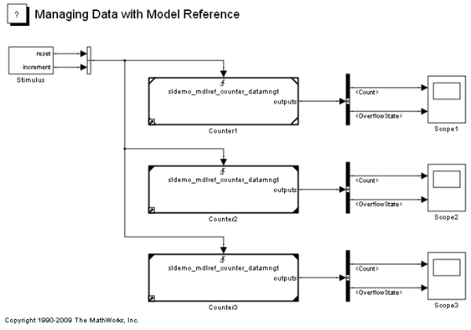Demo Content
This demo uses a top model (sldemo_mdlref_datamngt) that contains three Model blocks: Counter1, Counter2, and Counter3. These blocks reference the same model (sldemo_mdlref_counter_datamngt).
The referenced model implements a limited counter algorithm that:
- Resets the counter if the first trigger input changes
- Increments the counter by a specified amount if the second input changes
- Saturates the counter between the specified upper and lower limits
The referenced model outputs a bus signal that contains:
- Count: the value of the counter as an 8-bit integer
- OverflowState: an enumerated value that indicates whether the counter is at the upper limit, lower limit, or in range
Demo Outline
The sequence of steps in the demo is as follows:
1. Prepare the referenced model (sldemo_mdlref_counter_datamngt) to use structures for the signals and parameters in its external interface.
2. Prepare the top model (sldemo_mdlref_datamngt) to call the referenced model.
3. Simulate the top model and examine the results.
Referenced Model: Setting Up Parameters
The referenced model has two model arguments (CounterParams, CounterICs) that parameterize the blocks in the model. Model arguments provide different parameter values to each instance of a referenced model. In this model, the arguments are defined as parameter structures to reduce the number of arguments being passed to the referenced model.
The process for defining the model arguments is as follows:
1. Open the referenced model (sldemo_mdlref_counter_datamngt).
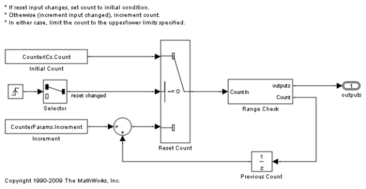2. Define MATLAB structures to parameterize the referenced model.
CounterParams.Increment = int8(1); CounterParams.LowerLimit = int8(-10); CounterParams.UpperLimit = int8(10);
CounterICs.Count = int8(0); CounterICs.OverflowState = SlDemoRangeCheck.InRange;
NOTE: This demo uses an 8-bit integer for the counter, so the numeric fields also use 8-bit integers.
3. Use the MATLAB structures as model arguments.
Model arguments are defined as variables in the model workspace of a referenced model. You can use the Model Explorer to view and edit the contents of the model workspace.
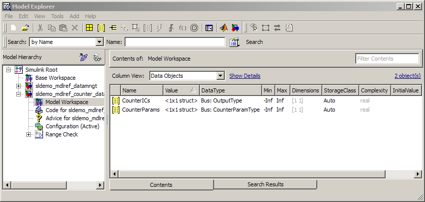
You can initialize the model workspace from a number of different data sources. This demo uses a MATLAB script (sldemo_mdlref_counter_datamngt_wsdata) to create the parameter structures to define the model arguments. Using a MATLAB script makes it easy to create and modify the parameter structure outside the model. It also facilitates incremental changes, version control, and data differencing.
Set the workspace's Data source to create the MATLAB structure in the model workspace and enter the variable name (CounterParams) into the Model arguments field in the model workspace's dialog box.
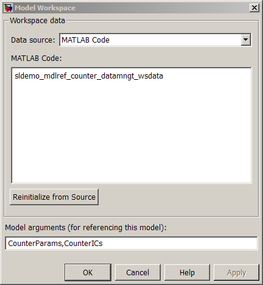
Referenced Model: Defining the Shape of the Output Bus Signal
The referenced model produces two results and packages them into a bus signal:
- Count: the value of the counter as an 8-bit integer
- OverflowState: an enumerated value that indicates whether the counter is at the upper limit, lower limit, or in range
To define the bus type for the root output of the referenced model:
1. Use the Bus Editor to define the bus object (OutputType).
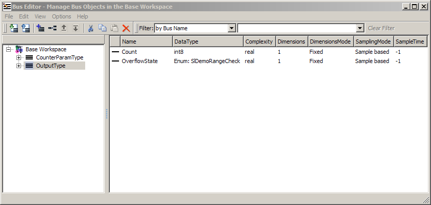
Alternatively, you can create the bus object at the MATLAB command line:
OutputType = Simulink.Bus; OutputType.Elements = Simulink.BusElement; OutputType.Elements(1).Name = 'Count'; OutputType.Elements(1).DataType = 'int8'; OutputType.Elements(2) = Simulink.BusElement; OutputType.Elements(2).Name = 'OverflowState'; OutputType.Elements(2).DataType = 'Enum: SlDemoRangeCheck';
2. Configure the root outport of the referenced model to output a nonvirtual bus signal based on this bus object (OutputType).
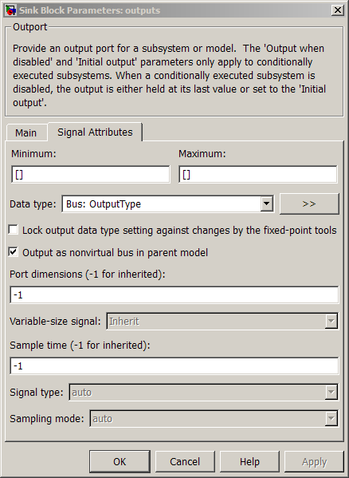
Referenced Model: Setting Initial Value for Bus Output
In general, the initial values for bus signals and states can be specified as '0', in which case all of the elements of the bus will be initialized to zero (or the relevant ground value). However, in certain cases, it is desirable to specify nonzero initial values for bus signals and states. In this demo, the initial condition of the counter is tunable, so the initial value of output signal must be set consistently.
To specify the initial value of the output of the referenced model:
1. Create a parameter structure that is compatible with the bus signal that you want to initialize. One of the model arguments (CounterICs) is a parameter structure that matches the shape of the output signal. This structure was defined as follows:
CounterICs.Count = int8(0); CounterICs.OverflowState = SlDemoRangeCheck.InRange;
2. Open the dialog box for the root outport and enter the name of the structure (CounterICs) into the Initial output field.
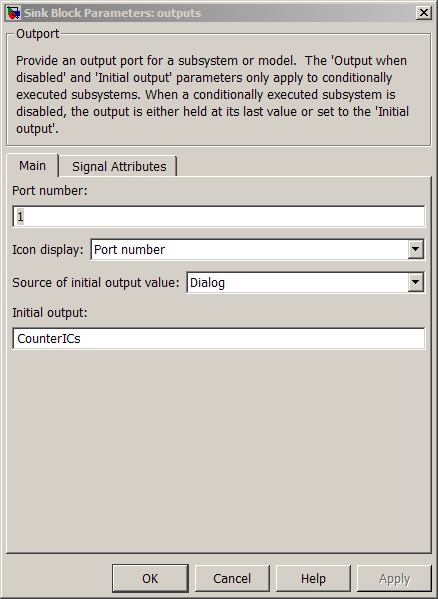
NOTE: In general, when initializing a bus signal or state, the parameter structure does not need to match the bus type exactly, but its fields must be a subset of the elements in the bus object and the attributes of these fields must match the elements in the bus object.
Referenced Model: Creating a Masked Model Block
It is often useful to mask Model blocks to customize the user interface. This demo creates a mask with a single mask parameter, for the model argument of the underlying Model block. To facilitate reuse, you can put the masked Model block into a library and define the mask on the library block.
Open the library to see the masked Model block (sldemo_mdlref_counter_datamngt_lib).
Top Model: Parameterizing Model Blocks
The referenced model is configured to accept a structure for its model argument. This demo calls each instance of the referenced model with different parameter values.
1. Open the top model (sldemo_mdlref_datamngt).
2. Create parameter structures with the same "shape" as the model arguments defined in the referenced model.
Param1.Increment = int8(1); Param1.LowerLimit = int8(-20); Param1.UpperLimit = int8(20);
Param2 = Param1; Param2.Increment = int8(2);
IC1.Count = int8(0); IC1.OverflowState = SlDemoRangeCheck.InRange;
IC2 = IC1; IC2.Count = int8(-10);
3. Set the mask parameters on the masked Model blocks to use these parameters.
For example, the parameters of the first Model block ('sldemo_mdlref_datamngt/Counter1') are set as:
- Param1 for the Counter parameters
- IC1 for the Initial conditions
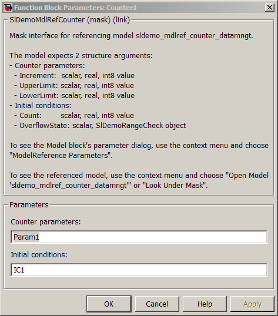
Top Model: Scheduling Calls to the Referenced Model
As mentioned earlier, the referenced model implements a limited counter algorithm with two trigger inputs. The algorithm detects "rising edges" in the trigger inputs and reacts as follows:
- Resets the counter if the first trigger input changes.
- Increments the counter by a specified amount if the second input changes.
In this demo, you drive all three instances of the counter algorithm with the same trigger inputs, generated by the Stimulus subsystem. The period and sample time of the trigger inputs are defined by the values entered for the mask parameters of the Stimulus subsystem:
- Reset counter every 4 seconds.
- Increment counter 5 times per second (period = 0.2 second).
- Sample time is 0.1 second.
NOTE: Reset and increment periods must be at least 2 times the sample time.
Simulating the Top Model
1. Save or close the referenced model.
You need to save the referenced model before it can be used by the top model. Alternatively, you can close the referenced model and use the original version of the model provided with this demo.
2. Simulate the top model by selecting Start from the Simulation menu or by typing Ctrl+T.
NOTE: Simulating the top model automatically generates a simulation target for the referenced model.
3. Review the simulation results as displayed by the Scope blocks.
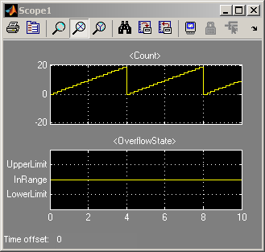 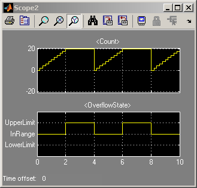 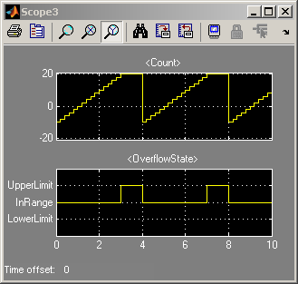